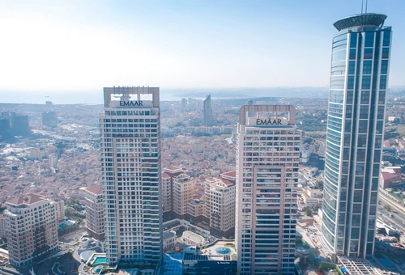
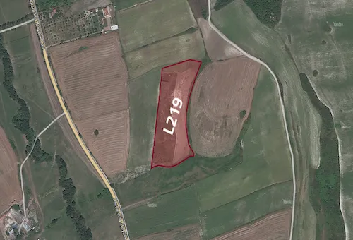
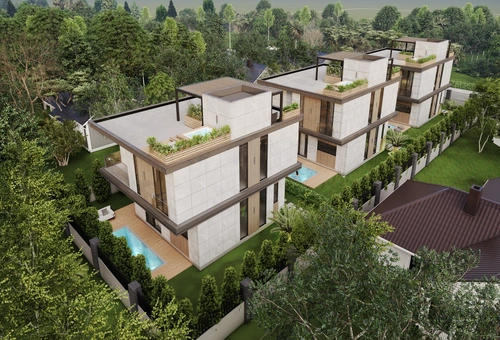
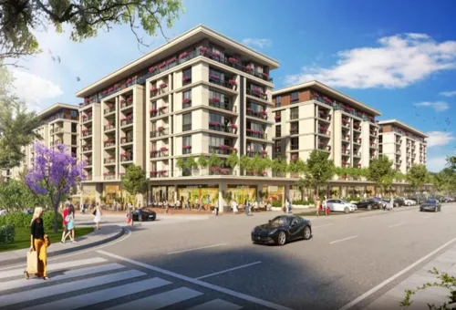

121 أرض
حصري

10,086 TRY / m²
L198 - أرض أرناؤوط كوي
اسطنبول الأوروبية / أرناؤوط كوي / Çilingir
350 م² قابلة للإعمار
حصري
11,699 TRY / m²
L213 - أرض للبيع قرب مطار إسطنبول وقناة إسطنبول
اسطنبول الأوروبية / أرناؤوط كوي / Yeniköy
965 م² قابلة للإعمار
حصري

6,051 TRY / m²
L219 - أرض مباشرة على قناة اسطنبول
اسطنبول الأوروبية / أرناؤوط كوي / Dursunköy
500 م² على القناة
حصري

8,420 TRY / m²
L224 - أرض زراعية بإطلالة في تشاتالجا
اسطنبول الأوروبية / تشاتالجا
1,250 م² زراعية
حصري

13,200 TRY / m²
L230 - أرض استثمارية قرب الطريق السريع
اسطنبول الأوروبية / باشاك شهير
720 م² قابلة للإعمار
حصري
5,480 TRY / m²
L241 - أرض واسعة للمستثمرين في سيليفري
اسطنبول الأوروبية / سيليفري
2,000 م² زراعية